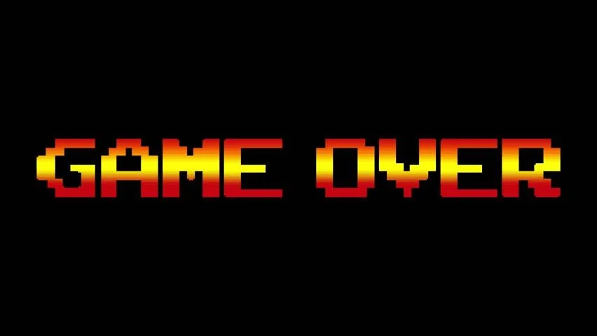
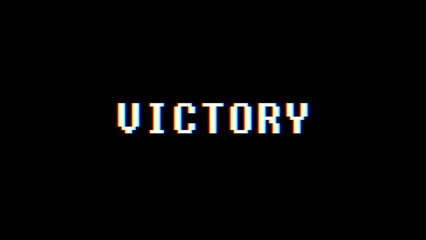
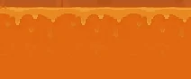

With The Jumpmaster's death, the thread of prophecy is severed. Refresh the page to restore the weave of fate, or persist in the doomed world you have created.

The jump master himself has completed the level
Refresh to begin again with new platforms.
